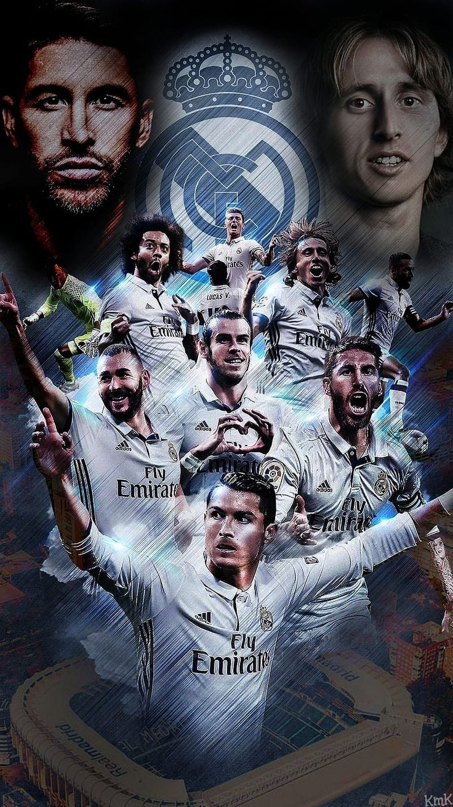
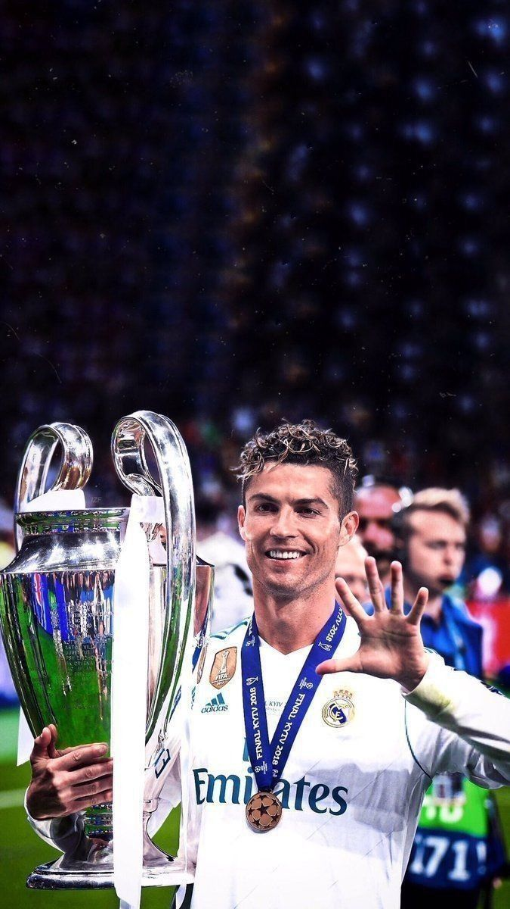

Ronaldo’s father, José Dinis Aveiro, was the equipment manager for the local club Andorinha. (The name Ronaldo was added to Cristiano’s name in honor of his father’s favorite movie actor, Ronald Reagan, who was U.S. president at the time of Cristiano’s birth.) At age 15 Ronaldo was diagnosed with a heart condition that necessitated surgery, but he was sidelined only briefly and made a full recovery. He first played for Clube Desportivo Nacional of Madeira and then transferred to Sporting Clube de Portugal (known as Sporting Lisbon), where he played for that club’s various youth teams before making his debut on Sporting’s first team in 2002.
A tall player at 6 feet 1 inch (1.85 meters), Ronaldo was a formidable athlete on the pitch. Originally a right-winger, he developed into a forward with a free-reined attacking style. He was able to mesmerize opponents with a sleight of foot that made sufficient space for openings in opposing defenses.
